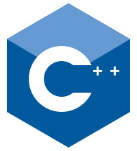
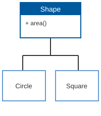
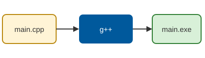

1. История создания

C++ (читается «си плюс плюс») — компилируемый язык программирования общего назначения. Его создал датский программист Бьёрн Страуструп, который работал в компании AT&T Bell Labs.
Работа над языком началась в году. Страуструпу для диссертации нужен был язык, в котором есть классы как в Simula, но который работает так же быстро, как C. Поэтому сначала язык назывался «C with Classes» — «Си с классами».
В году язык переименовали в C++. Название
придумал Рик Маскитти: оператор ++ в языке C означает увеличение
на единицу, то есть C++ — это «следующий шаг после C». Первая книга
«Язык программирования C++» вышла в 1985 году.
«C позволяет легко выстрелить себе в ногу. С C++ это сделать сложнее, но если получится — отстрелишь всю ногу».
— Бьёрн Страуструп
Официальный международный стандарт ISO появился только в 1998 году. После этого язык продолжает развиваться, и новая версия стандарта выходит примерно раз в три года.
| Год | Стандарт | Главные нововведения |
|---|---|---|
| 1998 | C++98 | Первый стандарт, библиотека STL |
| 2003 | C++03 | Исправление ошибок стандарта |
| 2011 | C++11 | auto, лямбда-функции, умные указатели |
| 2014 | C++14 | Небольшие улучшения C++11 |
| 2017 | C++17 | std::optional, файловая система |
| 2020 | C++20 | Концепты, модули, корутины |
| 2023 | C++23 | std::print, std::expected |
| Источник: Википедия | ||
2. Краткий обзор языка

C++ поддерживает несколько стилей программирования: процедурный, объектно-ориентированный и обобщённый (шаблоны). Программа на C++ сначала переводится компилятором в машинный код, поэтому она работает очень быстро.
На C++ пишут операционные системы, игры и игровые движки, браузеры, программы для микроконтроллеров. Например, на нём написаны Unreal Engine и большая часть браузера Google Chrome.
Основные возможности
- Классы и объекты
- Наследование и полиморфизм
- Шаблоны функций и классов
- Перегрузка операторов
- Ручное управление памятью (
newиdelete)
Популярные компиляторы
- GCC (g++)
- Clang
- Microsoft Visual C++
- Intel C++ Compiler
Основные типы данных
int— целое числоdouble— число с плавающей точкойchar— один символbool— логическое значениеstd::string— строка

- Компилятор
- Программа, которая переводит текст программы в машинный код.
- STL
- Стандартная библиотека шаблонов: контейнеры, алгоритмы, итераторы.
Размер типа int обычно 4 байта, поэтому он хранит числа примерно до 231. Чтобы скомпилировать программу в Visual Studio, можно нажать Ctrl + F5. Примеры программ смотрите в разделе 3. Больше информации — на Википедии.
3. Примеры кода
Пример 1. Hello, World!
#include <iostream>
int main() {
std::cout << "Hello, World!" << std::endl;
return 0;
}Пример 2. Цикл и условие
// выводим чётные числа от 1 до 10
for (int i = 1; i <= 10; i++) {
if (i % 2 == 0) {
std::cout << i << " ";
}
}Пример 3. Класс
class Student {
public:
std::string name;
int age;
void print() {
std::cout << name << ", " << age << std::endl;
}
};
Student s;
s.name = "Султан";
s.age = 19;
s.print();Пример 4. Вектор
#include <vector>
std::vector<int> v = {5, 3, 8};
v.push_back(1); // добавить в конец
int sum = 0;
for (int x : v) {
sum += x;
}Вывод программы из примера 2: 2 4 6 8 10
4. Использованные теги и CSS-свойства
HTML-теги (54)
<a><abbr><address><article><b><blockquote><body><caption><cite><code><dd><div><dl><dt><em><figcaption><figure><footer><h1><h2><h3><head><header><hr><html><i><img><kbd><li><link><main><mark><meta><nav><ol><p><pre><samp><section><small><span><strong><sup><table><tbody><td><tfoot><th><thead><time><title><tr><ul><var>
CSS-свойства (42)
background-colorborderborder-bottomborder-collapseborder-leftborder-radiusbox-shadowcaption-sideclearcolorcolumn-countdisplayfloatfont-familyfont-sizefont-stylefont-weightheightletter-spacingline-heightlist-stylelist-style-imagelist-style-typemarginmargin-bottommargin-leftmargin-topmax-widthopacityoverflowoverflow-xpaddingpadding-bottompadding-lefttext-aligntext-decorationtext-indenttext-transformvertical-alignwhite-spacewidthword-spacing